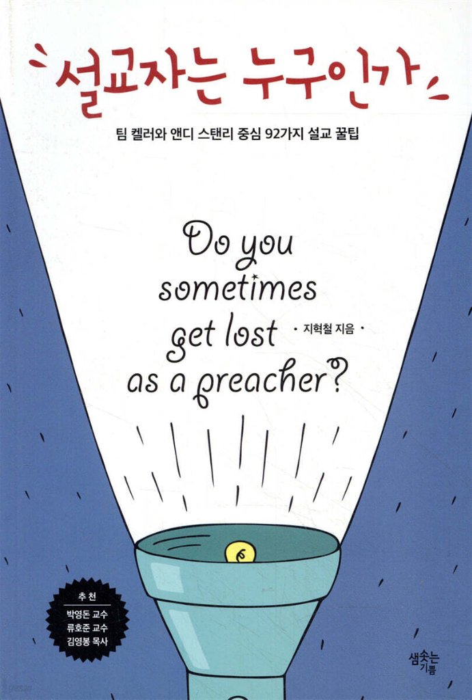
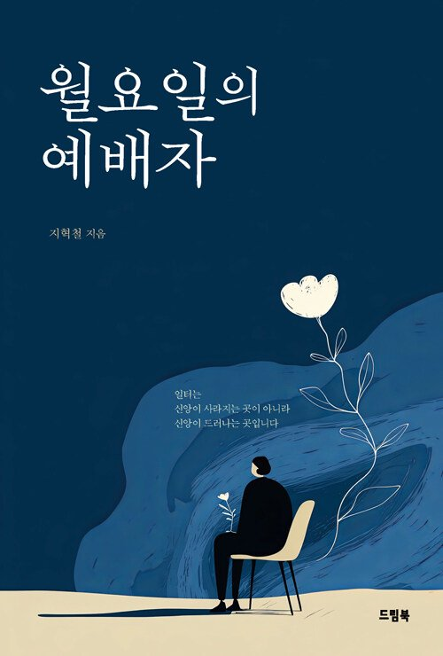

MINISTRY AI LAB · 11월 마지막 정기 강의
설교자는 누구인가?
일상 언어의 설교를 어떻게 할 것인가?
내년 설교를 준비하는 11월의 마지막 월요일 밤.
화려한 이론이 아니라 지금 목회 현장에서 설교를 고민해 온 지혁철 목사님과 함께,
설교자의 본질적 철학과 성도의 삶에 닿는 ‘들리는 설교’의 실제를 나눕니다.
PUBLISHED BOOKS BY PASTOR JI
설교와 일상 신앙을 잇는 지혁철 목사의 저서

GOSPEL OF JOHN
일곱 가지
이적을 통해
만나는 예수
이적을 통해
만나는 예수
STEP 01 · ATTENTION
왜 지금, 다시 설교인가
한 해의 강단을 마무리하고 내년 설교를 준비하는 11월의 질문.
매주 강단에 서지만,
내 설교는 성도의 월요일에 닿고 있습니까?
신학을 공부하고 성실히 원고를 쓰지만, 강단에서 내려오는 길에 문득 찾아오는 막막함이 있습니다. 성도들의 고단한 평일 한가운데서 살아 숨 쉬는 ‘일상의 언어’로 복음을 전하는 일은 결코 쉽지 않습니다.
신학의 언어와 일상 사이의 거리
본문 해석과 교리는 충실하지만, 막상 성도의 삶과 일터에서는 공허하게 들리는 것은 아닌지 고민될 때가 있습니다.
설교자로서 길을 잃는 순간
“Do you sometimes get lost as a preacher?” 연차가 쌓여도 매주 반복되는 준비 앞에서 정체성과 방향이 흔들리곤 합니다.
점검과 피드백의 부재
내 설교의 습관과 반복되는 실수를 정직하게 돌아보고, 동료 사역자와 건강하게 피드백을 나눌 자리가 턱없이 부족합니다.
“내년 설교를 준비하는 시점인 11월 말, 설교의 본질과 실제를 함께 돌아보고 싶습니다. 설교는 일방적인 전달이 아니라 성도의 일상과 만나는 깊은 소통이기 때문입니다.”
— 지혁철 목사 · 이번 11월 마지막 세미나를 준비하며
STEP 02 · INTEREST
두 파트의 깊은 나눔
온·오프라인 7여 회 검증된 세미나 커리큘럼을 2시간에 담았습니다.
설교 철학의 본질부터
‘들리는 설교’의 실천적 노하우까지
《설교자는 누구인가》를 중심으로 진행해 온 세미나의 핵심을 1시간 30분 집중 강의 + 30분 실시간 질의응답으로 구성했습니다. 단순한 스킬 나열이 아니라 철학과 실제를 하나의 흐름으로 연결합니다.
PART 01
설교 철학 이야기
나는 왜 설교하는가?
“탁월한 설교 이전에, 흔들리지 않는 나만의 설교 철학을 세우다”
- ‘나는 왜 설교하는가?’라는 가장 본질적인 질문에서 출발하는 설교자의 정체성
- 다소 이론적이지만 사역자가 반드시 짚고 넘어가야 할 설교 신학과 소명
- 설교 홍수 시대에 청중과 진정성 있게 호흡하는 현대 설교의 방향성
PART 02
설교의 실제
일상 언어의 설교, 어떻게 들리게 할 것인가?
“현장에서 부딪히며 찾아낸 구체적이고 실천적인 설교 노하우”
- 어떻게 하면 청중의 귀와 마음에 닿는 ‘들리는 설교’를 작성하고 전달할 수 있는가
- 설교자가 현장에서 무의식중에 자주 저지르는 대표적인 실수와 점검 포인트
- 스스로를 점검하고 동료들과 건강하게 설교 피드백을 주고받는 구체적 가이드
PART 03
30분 Q&A · 확장
실시간 질의응답 & 후속 피드백 소그룹 안내
“듣고 끝나는 강의가 아니라, 함께 원고를 나누고 자라가는 모임으로”
- 참여 목회자들의 실제 설교 고민을 나누는 30분 집중 질의응답
- 온라인 세미나 이후 참여자들의 요청과 반응에 따라 실제 설교 원고 작성·시연·피드백 소그룹 및 오프라인 교제 모임으로 확장 예정
목회 AI 연구소가 이 강의를 여는 이유: 목회 AI 연구소는 화려하고 멀리 있는 스타 강사가 아니라, 지금 목회 현장에 서 있는 동료 사역자들이 서로의 실제 노하우를 나누는 열린 공간입니다. 기술과 AI의 시대일수록 가장 본질적인 ‘사람을 향한 말씀의 언어’를 함께 다듬어 갑니다.
STEP 03 · DESIRE
기대되는 변화와 신뢰
강의를 통해 얻게 될 실제적 유익과 지혁철 목사님의 사역 이야기.
이 두 시간이 지나면,
내년 설교를 준비하는 기준이 선명해집니다
나만의 설교 철학 정립
‘나는 왜 설교하는가’에 대한 분명한 답을 통해, 유행에 흔들리지 않는 설교자의 내적 중심을 세웁니다.
일상 언어로의 복음 번역 감각
주일 예배당을 넘어 성도의 월요일 일터와 가정에 살아남는 ‘들리는 설교’의 구체적인 원리를 얻습니다.
자주 하는 실수 점검과 피드백 기준
설교자가 흔히 놓치는 함정을 객관적으로 진단하고, 원고와 전달을 개선하는 건강한 피드백 눈을 기릅니다.
혼자가 아닌 동역 네트워크
목회 AI 연구소 커뮤니티와 후속 설교 피드백 모임을 통해, 함께 성장하는 현장 목회 동료들을 만납니다.
강사 지혁철 목사
광주 잇는교회 담임목사(대한예수교장로회 고신) · 유튜브 ‘지혁철 목사의 말씀산책’ 운영
대학 시절 CCM 밴드와 보컬의 꿈을 품고 미국 유학을 떠났으나, 유학 초기 설교자의 소명으로 부름받아 말씀과 예배 연구의 길을 걸었습니다. 광주은광교회 부목사 사역을 거쳐 2023년 5월 광주 첨단지구에 ‘하늘과 땅을 잇고, 사람과 세상을 잇는’ 잇는교회를 개척해 지역사회와 다음세대를 섬기고 있습니다. 현장 부교역자 시절부터 체득한 설교 고민을 담은 《설교자는 누구인가》를 비롯해 세 권의 저서를 통해 설교자와 성도의 일상을 말씀으로 잇고 있습니다.
- 고신대학교 기독교교육학 전공
- 고려신학대학원 신학석사(M.Div.)
- CFNI School of Worship Technical Art (예배 실제 과정)
- Dallas Baptist University Worship Leadership M.A. 과정
- 미국 풀러신학교(Fuller Seminary) 목회학 박사(D.Min.)
- 저서: 《설교자는 누구인가》, 《일곱 가지 이적을 통해 만나는 예수》, 《월요일의 예배자》
“설교 홍수 시대, 설교가 저평가되는 시대에 설교자로 자기 정체성을 지키며 살아가기란 여간 어렵지 않다. 지혁철 목사의 글과 나눔은 체념하여 주저앉았거나 근근이 버티며 다시 일어나고자 하는 설교자에게 목을 축여주는 단비 같다.”
— 류호준 박사 (백석대학교 신학대학원 은퇴교수) · 《설교자는 누구인가》 추천사 중 (박영돈 교수 · 김영봉 목사 외 다수 추천)
이런 목회자·사역자분께 특별히 권합니다
- 2027년 새해 설교 방향과 설교 철학을 미리 정돈하고 싶은 담임·부교역자
- 신학적 내용을 성도의 평일과 일터에 닿는 ‘일상 언어’로 풀고 싶은 설교자
- 매주 설교 준비 앞에서 막막함을 느끼는 신학생 및 초보 설교자
- 동료 목회자들과 건강한 설교 피드백과 현장 노하우를 나누고 싶은 사역자
STEP 04 · ACTION
지금 함께하세요
강의 신청 후 목회 AI 연구소 오픈채팅방에 입장하시면 모든 안내를 받으실 수 있습니다.
11월의 마지막 밤,
내년 설교의 첫 문장을 함께 여세요
SEMINAR REGISTRATION
2026년 11월 30일 저녁 7:30 시작
강의 주제
설교자는 누구인가? — 일상 언어의 설교를 어떻게 할 것인가?
강사
지혁철 목사 (광주 잇는교회 담임목사)
일시
2026년 11월 30일(월) 오후 7:30 – 9:30 (강의 90분 + Q&A 30분)
장소 및 주최
온라인 ZOOM · 목회 AI 연구소 주최
STEP 1 · 신청서 작성
강의 신청하기 (구글 폼)
간단한 신청서를 작성해 주시면, 세미나 당일 입장하실 수 있는 ZOOM 접속 링크와 안내를 보내드립니다.
STEP 2 · 연구소 함께하기
목회 AI 연구소 오픈채팅 입장
강의 공지·자료는 물론, 현장의 목회자들이 설교·사역·AI 노하우를 함께 나누는 목회 AI 연구소에 들어오세요.
강의 일정이나 참여 방법이 궁금하신가요?
ZOOM 접속, 강의 안내, 향후 오프라인·소그룹 모임 관련 문의는 1:1 오픈채팅으로 편하게 남겨주세요.